solve_ivp_matrix
Solve matrix-valued initial value problems using fixed-step IVP solvers.
Back to IVP Solver Toolbox Contents.
Contents
Syntax
[t,M] = solve_ivp_matrix(F,[t0,tf],M0,h)
[t,M] = solve_ivp_matrix(F,{t0,C},M0,h)
[t,M] = solve_ivp_matrix(__,p)
[t,M] = solve_ivp_matrix(__,p,method)
[t,M] = solve_ivp_matrix(__,p,method,wb)
Description
[t,M] = solve_ivp_matrix(F,[t0,tf],M0,h) solves the IVP defined by F(t,M) from t0 until tf using the classic Runge-Kutta fourth-order method with an initial condition M0 and step size h. This syntax assumes that the state matrix is a square matrix.
[t,M] = solve_ivp_matrix(F,{t0,C},M0,h) does the same as the syntax above, but instead of terminating at a final time tf, the solver terminates once the condition function C(t,y) is no longer satisfied. This syntax assumes that the state matrix (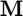) is a square matrix.
[t,M] = solve_ivp_matrix(...,p) can be used with either of the syntaxes above to specify the number of rows of the state matrix (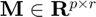). The parameter p should always be input if the state matrix is not square.
[t,M] = solve_ivp_matrix(...,p,method) can be used with any of the syntaxes above to specify the integration method (i.e. the function will use the specified integration method, instead of the classic Runge-Kutta fourth-order method used by the previous two syntaxes). Options for the integration method are listed in the "Input/Output Parameters" section.
[t,M] = solve_ivp_matrix(...,p,method,wb) can be used with any of the syntaxes above to define a waitbar. If wb is input as true, then a waitbar is displayed with the default message 'Solving IVP...'. To specify a custom waitbar message, input wb as a char array storing the desired message.
Input/Output Parameters
| Variable | Symbol | Description | Format | |
| Input | F | multivariate, matrix-valued function ( - inputs to F are the current time (t, 1×1 double) and the current state matrix (M, p×r double) - output of f is the state matrix derivative (dMdt, p×r double) at the current time/state |
1×1 function_handle |
|
| t0 | initial time | 1×1 double |
||
| tf | final time | 1×1 double |
||
| C | condition function ( - inputs are the current time (t, 1×1 double) and the current state matrix (M, p×r double) - output is a 1×1 logical (true if solver should continue running, false if solver should terminate) |
1×1 function_handle |
||
| M0 | initial condition | p×r double |
||
| h | step size | 1×1 double |
||
| p | (OPTIONAL) number of rows of state matrix | 1×1 double |
||
| method | - | (OPTIONAL) integration method (defaults to 'RK4')
- 'Euler' (Euler 1st-order method) - 'RK2' (midpoint method) - 'RK2 Heun' (Heun's 2nd-order method) - 'RK2 Ralston' (Ralston's 2nd-order method) - 'RK3' (Kutta's 3rd-order method) - 'RK3 Heun' (Heun's 3rd-order method) - 'RK3 Ralston' (Ralston's 3rd-order method) - 'SSPRK3' (strong stability preserving 3rd-order method) - 'RK4' (classic Runge-Kutta 4th-order method) - 'RK4 Ralston' (Ralston's 4th-order method) - 'RK4 3/8' (3/8-rule 4th-order method) - 'AB2' (Adams-Bashforth 2nd-order method) - 'AB3' (Adams-Bashforth 3rd-order method) - 'AB4' (Adams-Bashforth 4th-order method) - 'AB5' (Adams-Bashforth 5th-order method) - 'AB6' (Adams-Bashforth 6th-order method) - 'AB7' (Adams-Bashforth 7th-order method) - 'AB8' (Adams-Bashforth 8th-order method) - 'ABM2' (Adams-Bashforth-Moulton 2nd-order method) - 'ABM3' (Adams-Bashforth-Moulton 3rd-order method) - 'ABM4' (Adams-Bashforth-Moulton 4th-order method) - 'ABM5' (Adams-Bashforth-Moulton 5th-order method) - 'ABM6' (Adams-Bashforth-Moulton 6th-order method) - 'ABM7' (Adams-Bashforth-Moulton 7th-order method) - 'ABM8' (Adams-Bashforth-Moulton 8th-order method) |
char | |
| wb | - | (OPTIONAL) waitbar parameters (defaults to false)
- input as "true" if you want waitbar with default message displayed - input as a char array storing a message if you want a custom message displayed on the waitbar |
char or 1×1 logical |
|
| Output | t | time vector | (N+1)×1 double |
|
| M | solution array | p×r×(N+1) double |
Note
- If 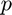 is not input, it is assumed that the state matrix () is a square matrix.
- The nth page of 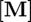 stores the state matrix (i.e. the solution) corresponding to the nth time in 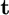.
Example
Consider the Riccati differential equation for the finite-horizon linear quadratic regulator problem:
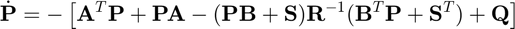
Find 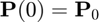 given that
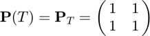
where 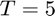. The state (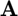) and input () matrices are
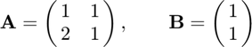
The state (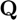), input (), and cross-coupling (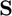) weighting matrices are
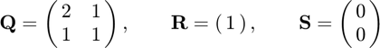
Define the matrices.
% state matrix A = [1 1; 2 1]; % input matrix B = [1; 1]; % state weighting matrix Q = [2 1; 1 1]; % input weighting matrix R = 1; % cross-coupling weighting matrix S = [0; 0];
Define the terminal condition and final time.
% terminal condition PT = [1 1; 1 1]; % final time T = 5;
Define the Riccati differential equation (a matrix-valued ODE).
F = @(t,P) -(A.'*P+P*A-(P*B+S)/R*(B.'*P+S.')+Q);
In this case, we have a terminal condition at time 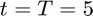, and want to find the initial condition at time 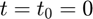. To do this, we will integrate backwards using an IVP solver, so the terminal condition 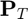 will actually form the initial condition. Solving the matrix-valued IVP with a step size of 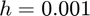,
[t,P] = solve_ivp_matrix(F,[T,0],PT,0.001);
Note that since is a square matrix, we did not have to specify its number of rows for the solve_ivp_matrix function.
Our original goal was to find 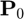. Extracting this matrix from the solution array (noting that the solution corresponding to 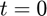 will be stored at the end of the solution array since we integrated backwards in time), we find
P0 = P(:,:,end)
P0 = 2.147130739665738 1.158223807741478 1.158223807741478 1.254683874725441
References
The example above is adapted from the following sources: